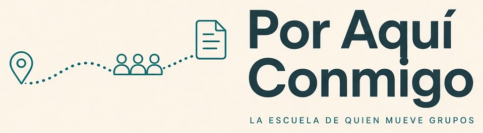
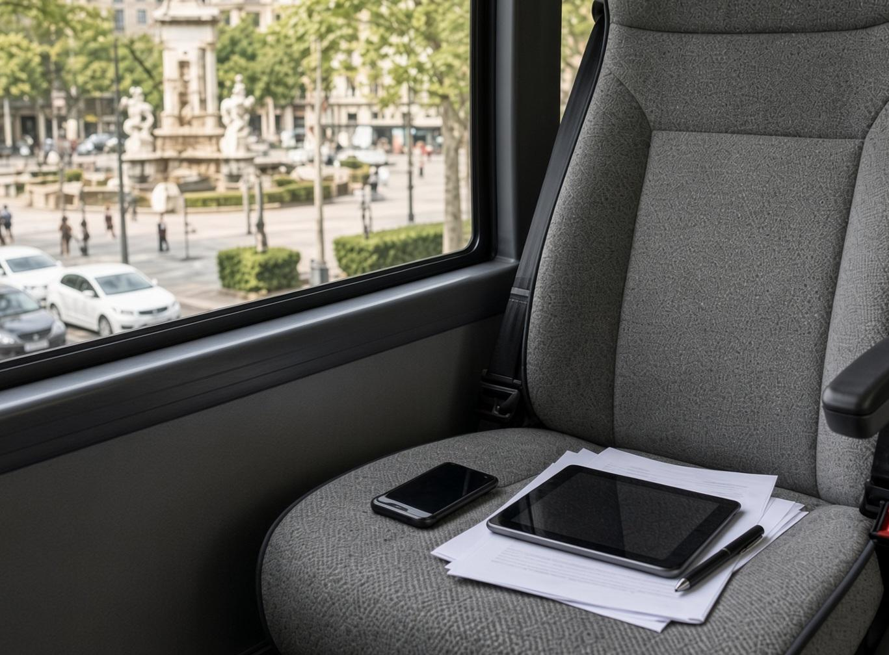
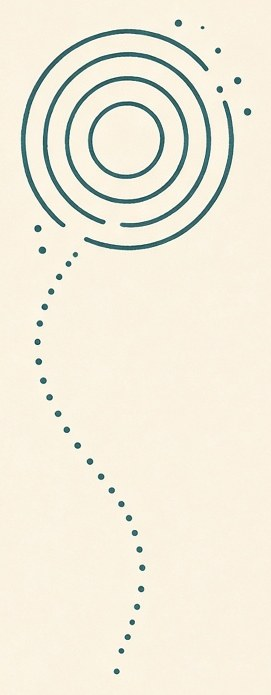
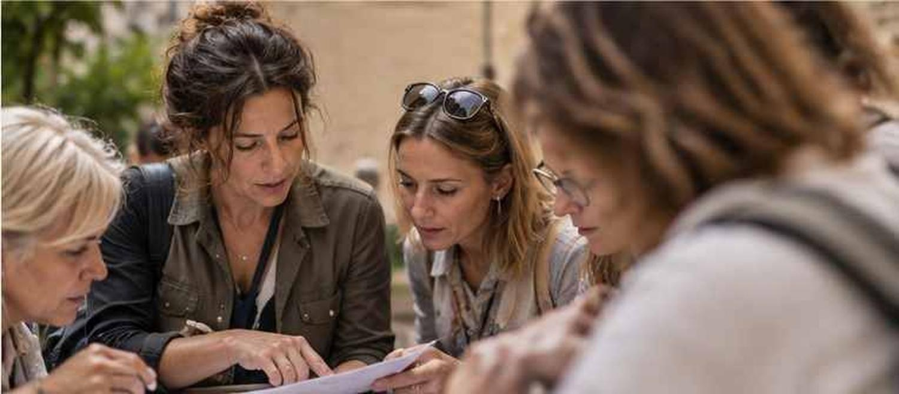

01 · Antes
El rooming no vive en la cabeza
- ExpedienteSi no está escrito, no existe.
- Timing realMargen de verdad, no el del mapa.
- Checklist de salidaRooming, alergias, movilidad, plan B.
- Briefing ejecutableHotel y conductor pueden usarlo.

Si el martes sales a la calle con 40 personas, esto es para ti. Vengas del leisure, de un incentivo, de un congreso o de un crucero: aquí se enseña el oficio de tierra. Lo que no sale en el máster y sí en el walkie.


Para quién
Acompañas · campo
El grupo te mira a ti cuando el plan se tuerce.
Preparas · mesa
El mismo expediente visto desde la mesa, para que el campo no tenga que improvisar.
El grupo
No hace falta venir de MICE.
Posicionamiento
Es
No es
Oficio · Método Tierra
Quince años convertidos en un método para prevenir, resolver y cerrar. Un mismo expediente antes, durante y después. Siempre por escrito.
01 · Antes
02 · Durante
03 · Después

Quiénes somos
CEO de Por Aquí Conmigo. Más de 15 años coordinando y moviendo grupos. La escuela tiene una cara. La suya.
No monta una escuela porque “el sector necesita formación”. La monta porque ha visto demasiados grupos salvados a pulso, y demasiadas coordinadoras buenas quemándose por no tener método.
Ha trabajado el leisure y el incentivo, la llegada de un congreso y el desembarco de un crucero. Sabe lo que pesa un expediente mal hecho y lo que ahorra uno bueno.
Por Aquí Conmigo nace para convertir experiencia operativa en método: menos memoria, menos heroísmo y más sistema antes, durante y después de cada grupo.
El martes no puede depender de la memoria.

Programa
Cinco días en Barcelona y dos encuentros online. El mismo expediente conecta la semana para que cada módulo termine en una herramienta o una decisión que puedas volver a usar.

Mesa: el expediente antes de salir.

Calle: el timing se camina.
Te llevas
Los seis módulos
Qué sale cada día
Así es un día de verdad
Situaciones operativas compuestas y anonimizadas basadas en experiencias del oficio. No son reseñas de alumnas.
Palma · leisure · guía
El hotel pilla a la coordinadora a contrapié.
Decisión
Un único expediente antes de salir.
Resultado
El hotel tiene lo que necesita antes de que llegue el bus.
Madrid · incoming · ops
Campo pregunta algo que ya debería estar escrito.
Decisión
Briefing operativo ejecutable.
Resultado
Conductor y coordinadora arrancan con la misma información.
Sevilla · incentivo · coordinadora
Sin cadena de mando, todo invita a improvisar.
Decisión
Escalar a quien decide y activar plan B.
Resultado
El grupo recibe una solución, no el problema interno.
Presencial
Aquí hay volumen y calle para entrenar. El contenido vale igual si trabajas en Madrid, Valencia, Sevilla, Málaga, Canarias, Baleares o el norte.
Cinco días porque hay cosas que no se aprenden solo en una videollamada: leer un espacio, caminar un timing, coordinarse y resolver con el reloj corriendo.

Antes · online
Primer encuentro para contexto, caso y preparación. El lunes no empieza desde cero.
Barcelona · 5 días
Documentos, decisiones y situaciones que necesitan presencia, tiempo y grupo.
Después · online
Debrief y adaptación de las herramientas a tu operativa real.
Por qué presencial
Una hoja puede decir doce minutos. La calle, un ascensor, un bus y cuarenta personas pueden decir otra cosa.
Se entrena qué dices al grupo, qué dices al cliente y qué conversación ocurre detrás.
Cohorte cero
Cinco días presenciales en Barcelona + dos encuentros online. Fecha y precio están pendientes de confirmación y se comunicarán antes de pedirte ningún compromiso.
Preguntas cortas